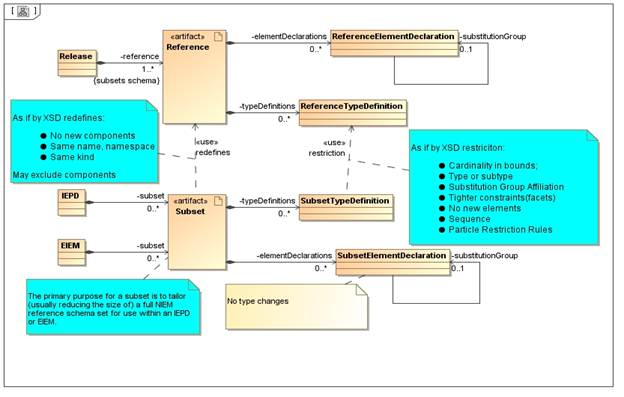
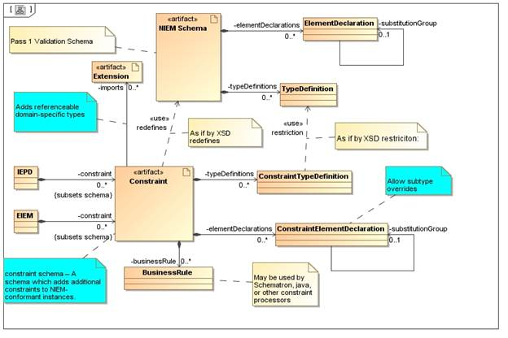

Subsetting
From the MPD Specification:
A NIEM schema
subset (also referred to as simply subset) is a set of schemas that constitutes a reduced set of
components extracted from a NIEM reference
schema set associated with a given numbered release or domain update.
Any given schema within a subset is referred to as a subset schema (terms reversed). The primary purpose for a subset
is to tailor (usually reducing the size of) a full NIEM reference schema set
for use within an IEPD or EIEM.
Definition: subset schema – An XML Schema document that meets
all of the following criteria:
• It is explicitly designated as a subset schema. This may be declared
by an MPD catalog or by a tool-specific mechanism outside the schema.
• It has a target namespace previously defined by a reference schema.
That is, it does not provide original definitions and declarations for schema
components, but instead provides an alternate schema representation of
components that are defined by a reference schema.
• It does not alter the business semantics of components in its
namespace. The reference schema defines these business semantics.
• It is intended to express the limited vocabulary necessary for an
IEPD or EIEM and to support XML Schema validation for an IEPD.
• It
satisfies all rules specified in the Naming and Design Rules [NIEM-NDR]
for subset schemas.
…
The fundamental rule for schema
subsets is as follows:
[Rule
3-1] Any XML instance that validates against a correct NIEM
schema subset will always validate against the entire NIEM reference schema set
from which that subset was created.
From the NIEM Business Information Exchange
Components document:
…a
subset of the EIEM (a subset of the extension schemas and a subset of the
master NIEM subset schemas) can be developed for each IEPD to more specifically
constraint the EIEM components used in the IEPD.
Based on these definitions and rules, we use the concept of subsetting
·
to apply to exchange,
subset, or reference models defined by a library. The library may be an EIEM, perhaps a “core”
EIEM, or a NIEM Release.
·
to include constraint
mechanisms which maintain the validity of XML instance documents with respect
to the “reference” model in the context of an exchange. This includes constraint mechanisms beyond just
cardinality adjustments.
We are guided on the choice of appropriate constraint mechanisms by the XML
Schema Specification with respect to redefines and restriction.
In a subset model:
·
No new components may be defined
·
No change of component kind is allowed
·
No change allowed to name (i.e., the NIEM name)
or namespace of a component
·
Components may be excluded from a subset model
(unless referenced)
The constraint mechanism considerations (based on XSD restriction) include:
·
Cardinality.
Subset element cardinality must be in bounds of reference element.
·
The facets of a type may be more constraining
then the reference element (but not less constraining)
·
No new elements/attributes/types may be defined
·
Sequence of elements must correspond to
reference sequence
·
Element type can not
be redefined
·
Element substitutionGroup
can not be redefined
·
One or more substitutable elements may be used
in place of a reference element, subject to cardinality, unique particle
attribution, etc.
·
A nillable reference
element may be made non-nillable in a subset, but not
vice-versa
·
A concrete reference element may be made
abstract in a subset, but not vice-versa
·
No change of aggregate kind may be made (i.e.,
reference versus containment)
·
An xsd:any wildcard in
a reference type may be represented by one or more elements in the subset,
subject to namespace constraints on the xsd:any,
cardinality, unique particle attribution

For Constraint Schemas (which are otherwise treated as subsets), we allow the following additional capability:
· An subset element/attribute may have its type be a subtype of its corresponding reference element/attribute
o For such a subtyping, the type may be from a namespace otherwise unknown to the reference schema. For example, the constraint for a subset schema may reference an extension schema.

To create a new (set of) subset <<InformationModel>>s the following procedure may be used:
• Select an unstereotyped Package (i.e., one that is not already an <<InformationModel>>)
• Right clickèNIEMèadd SubsetModels… This opens a Selection Dialog.
• The Dialog for Selection of Reference Models includes <<InformationModel>>s from all read-only (shared) models
The result of the action, for each selected reference <<InformationModel>>:
• A new subset (or extension) <<InformationModel>> is created
• The new subset <<InformationModel>> <<references>> the selected “reference” <<InformationModel>>
• The new subset has the same targetNamespace as the selected “reference” <<InformationModel>>
• The new subset <<InformationModel>> is empty (i.e., no Classifiers)
To create a new subset Classifier the following procedure may be used:
• Select a “subset” <<InformationModel>>
• Right clickèNIEMèadd SubsetClassifiers… This will open a Selection Dialog for Classifiers
• The Dialog for Selection of Classifiers: enables selection from the Classifiers of the <<references>> <<InformationModel>>
The result of the action, for each selected “reference” Classifier:
• A new subset Classifier is created in the “subset” model
• Any requisite (e.g., inherited) Classifiers and <<InformationModel>>s are created
• New Classifiers are added to the diagram (if actioned from a diagram)
• Name, kind, stereotype, abstract, comment, etc., cloned from reference Classifier
• The new Classifier is otherwise empty (except Enumeration *CodeSimpleType, which will contain the EnumerationLiterals from the reference Enumeration)
To modify a “subset” Classifier the following procedure may be used:
o Select the “subset” Classifier; Right clickèSpecification
o Permitted changes include:
o May change from not abstract to abstract (isAbstract)
o May change name (in accordance with NIEM Name coercion rules)
o For Enumeration, may remove EnumerationLiterals
o For <<ValueRestriction>>, may make Facets more restrictive
o May add <<ValueRestriction>> for PrimitiveTypes
To create a new subset Property the following procedure may be used:
• Select a “subset” Classifier
• Right clickèNIEMèadd SubsetProperties… This will open a Selection Dialog for Properties
• The Dialog for Selection of Properties: enables selection from “reference” Classifier plus corresponding <<PropertyHolder >> substitutions
The result of the action, for each selected “reference” Property:
• A new subset Property created in subset Classifier
• Any requisite types and <<InformationModel>>s are created
• Any requisite substitutionGroup Properties are created
• Any requisite <<PropertyHolder>>s are created
• Any requisite <<References>> (e.g., to a foreign namespace) are created
• Cardinality, aggregation, name, comment, etc., cloned from reference Property
• Property order aligned with reference Classifier
To modify a “subset” Property, the following procedures may be used:
• Select Property: Right clickèquick action. A number of direct actions may be available on the context menu, including setting multiplicity, stereotype, aggregation, kind, type, isNillable.
• Select Property; Right clickèSpecification. Opens Specification Dialog for Property.
• Permitted changes include:
o May change type to be subtype of original type (Constraint model only)
o May change cardinality within bounds of original type
o May change from not abstract to abstract (isDerivedUnion)
o May change name (in accordance with NIEM Name coercion rules)
Reference Properties which have substitutes defined may be decomposed into one or more substitutable “subset” Properties. The substitutable Properties are those defined in the Reference models which are transitively referencing the head property via substitutionGroup reference (i.e., subsettedProperty in UML).
To define a particle decomposition for a reference Element the following procedure may be used:
· Select a “subset” Property (of a Classifier, not a <<PropertyHolder>>) which corresponds to a reference element which has substitutable elements
· Right clickèSubstitutionGroup Decomposition. This will open a Property Selection Dialog
o Note that the “reference” Property may be different than the current “subset” Property due to a prior particle decomposition. For selection purposes, it is the original “reference” Property that determines the Property selection list.
o The Properties available for selection are the transitive closure of Properties which are subsettedProperties of the “reference” Property. Note that a subsettedProperty is typically defined in the context of a <<PropertyHolder>>. Thus the “reference” Property has an implicit or explicit <<references>> to a <<PropertyHolder>> Property which serves as the head of a substitutionGroup tree.
o The Property Selection Dialog has an initial selection populated and ordered with Properties which represents the current Particle Decomposition of a “reference” Property for the “subset”.
o Properties may be added, removed, reordered from the initial selection list, based on selectable substitutions.
Result is a new Particle Decomposition consisting of the ordered Properties selected. The group of Properties will be subject to validation, including consistency with respect to cardinality and unique particle attribution.
The Define Subsets action provides for selecting an arbitrary combination of <<InformationModel>>s, Classifiers, and Properties. The action may be performed using the following procedure:
· Select a top level Package (i.e., not an <<InformationModel>>).
· Right click: NIEMèdefine Subsets… This results in opening a Selection Dialog for <<InformationModel>>s, Classifiers, and Properties.
· The available selections includes all “reference” model <<InformationModel>>s, Classifiers, and Properties which have not already been subset.
Result is a composite of the actions add SubsetModels, add SubsetClassifiers, and add SubsetProperties. In addition to the selected elements, any requisite containers or referenced types will be created. New <<InformationModel>>s will be created in a packaging structure recommended by the MPD Specificaiton.